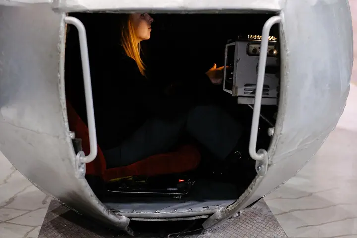
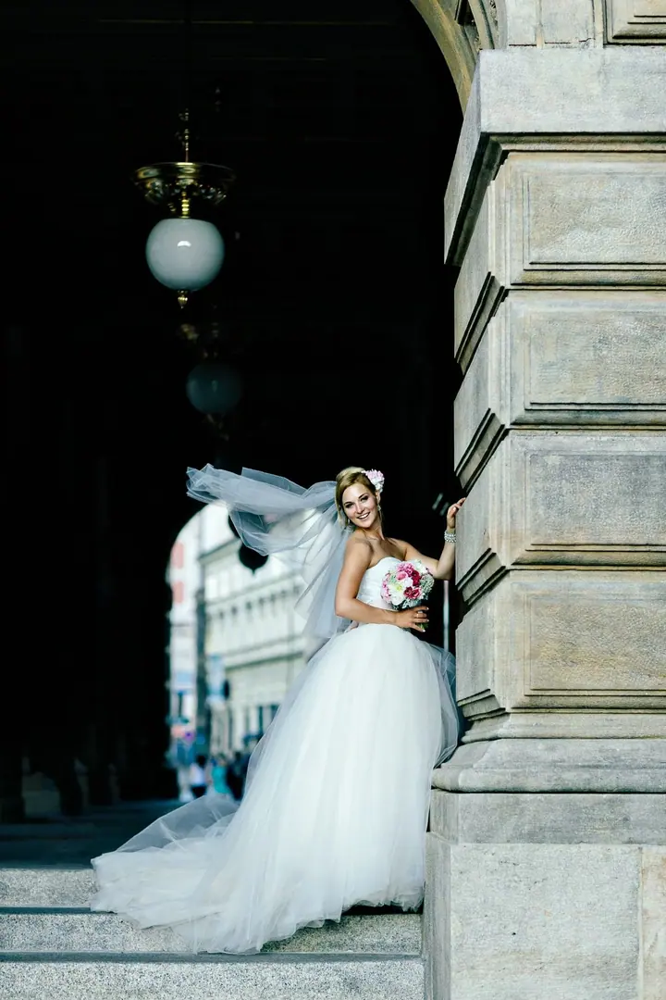
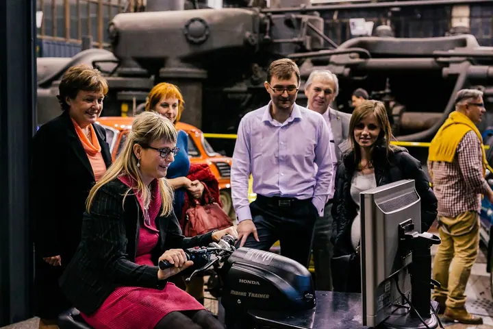
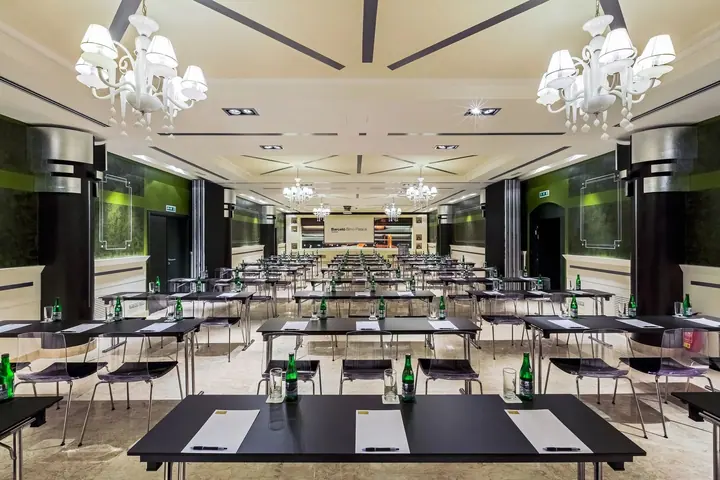

Svatební fotografie
Specializuji se na přirozené a emotivní fotografie plné příběhu. Celý den fotím nenuceně a zachycuji opravdové momenty, ne pevně aranžované scény.





Jmenuji se Lukáš Koňařík a jsem svatební fotograf z Brna a Prahy. Fotím přirozeně a nenuceně, protože mě víc zajímají opravdové momenty než aranžované scény. Za vámi pojedu kamkoliv, třeba i na svatbu do Benátek.
Více o mně
„Specializuji se na přirozené a emotivní fotografie plné příběhu.“
— Lukáš Koňařík
Specializuji se na přirozené a emotivní fotografie plné příběhu. Celý den fotím nenuceně a zachycuji opravdové momenty, ne pevně aranžované scény.
Procházka po městě nebo slunný den venku, kdy se před kamerou trochu rozehřejete. Pak se na svatbě cítíte mnohem uvolněněji.
Konference, firemní setkání a společenské akce fotím tak, aby z fotek byla cítit atmosféra a skutečné emoce lidí.
Fotím hotelové pokoje, sály a interiéry, aby se ukázaly ve světle, prostoru a se všemi detaily.
Fotografie jsou ilustrační
Svatby fotím už více než devět let. Specializuji se na přirozené a emotivní fotografie plné příběhu. Nikoho nestavím do strnulých póz. Raději se držím stranou a sleduji, co se mezi vámi a vašimi blízkými opravdu děje.
Empatie je pro mě klíč a záleží mi na každém detailu. Mám cit pro kreativní fotografie, ale ještě víc mi jde o momenty, které vydrží roky. Fotil jsem svatby v Krkonoších, v Praze, v Čechách pod Kosířem i na Canal Grande v Benátkách.
Kromě svateb fotím také firemní akce, eventy a interiéry. Základnu mám v Brně a v Praze, ale za dobrým příběhem rád vyrazím kamkoliv, blízko i daleko.
Ozvěte se e-mailem, telefonem, přes WhatsApp nebo Viber. Ověřím termín a domluvíme se na dalším kroku.
Sejdeme se v Praze, v Brně nebo kdekoliv jinde. Povíte mi o svém dni a o tom, co je pro vás důležité.
Fotím nenuceně a nenápadně. Zachycuji opravdové momenty a detaily, na kterých vám záleží.
Fotografie pečlivě vyberu a upravím. Hotové snímky najdete v klientské galerii, odkud je snadno sdílíte s rodinou.
Ano. Pojedu za vámi kamkoliv po republice i do zahraničí, svatby jsem fotil třeba v Benátkách.
Ne. Můj přístup je nenucený, víc mě zajímají opravdové momenty než aranžované scény. Pár společných portrétů samozřejmě vyfotíme, ale v klidu a přirozeně.
Určitě. Předsvatební focení je dobrý způsob, jak se poznat a zvyknout si na foťák ještě před velkým dnem.
Napište mi e-mail nebo zavolejte. Jsem k dispozici i na WhatsAppu a Viberu.